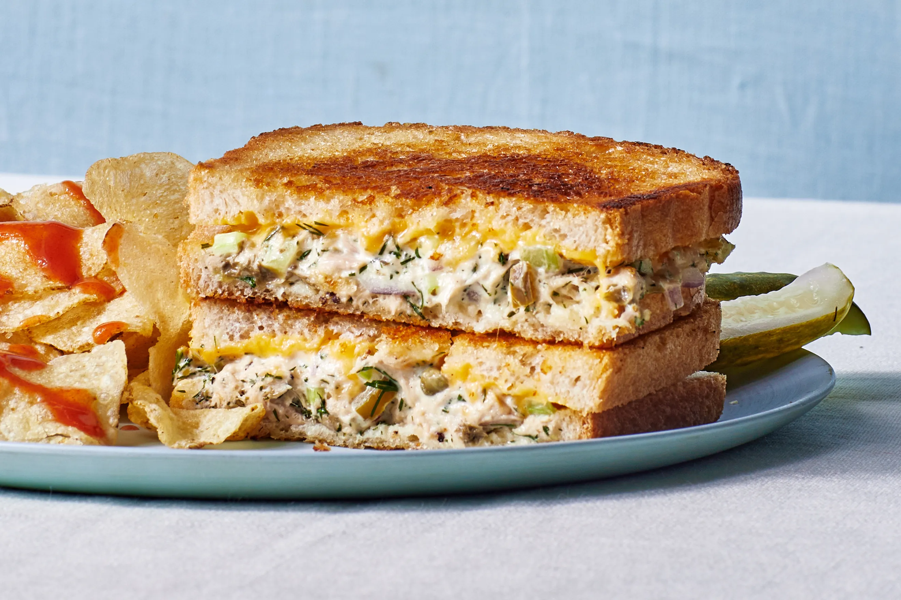

Tuna Melt Sandwich

This is a tuna melt sandwich recipe. It's made with Sandwich toast, cheddar cheese and pickles.
Ingredients:
- Sandwich toast
- Cheddar cheese
- Canned tuna
- Mayonnaise
- Pickles
- Hot sauce
Steps:
- Preheat the pan to medium heat.
- In a bowl, mix the canned tuna with mayonnaise chopped pickles and hot sauce.
- Spread the tuna mixture on a slice of sandwich toast.
- Add a layer of cheddar cheese on top of the tuna mixture.
- Place another slice of sandwich toast on top to form a sandwich.
- Cook in the pan for 10-15 minutes, or until the cheese is melted and bubbly.
- Add chips on the side.
Back to home